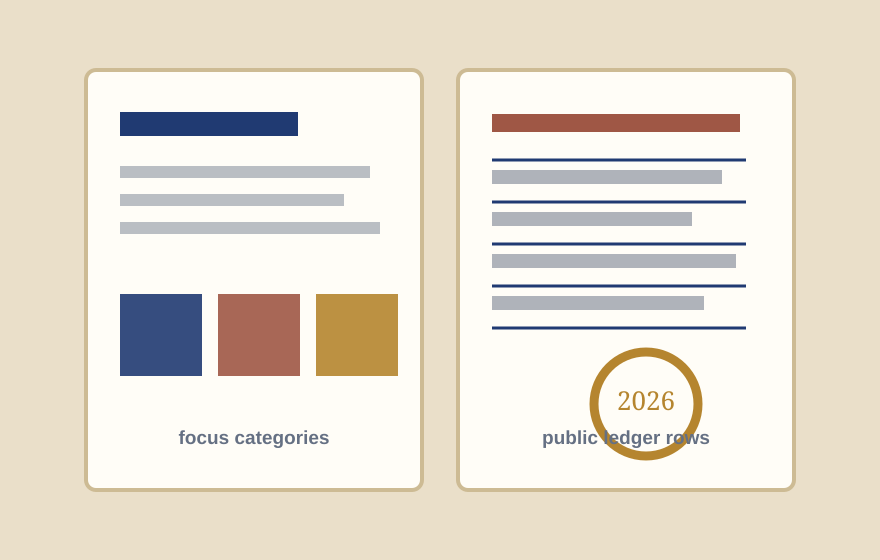

Neighborhood care
Clinics, food access, mental-health peer programs, and resident-led care support.
Fictional demo · Basic foundation page
Atlas gives a family foundation a clear public page for grant seekers: who the foundation serves, how the board reviews requests, where example grants are published, and how partners contact the board.
Who we serve
Foundation pages become useful when the audience is explicit. This demo is written for small clinics, neighborhood arts programs, libraries, mutual-aid groups, and civic repair teams who need a clear path to a board conversation.

Visual proof object
The page now includes a report-spread visual so the foundation feels operational: board notes, example grantees, focus categories, and public-record framing instead of plain text cards only.
Focus areas
Clinics, food access, mental-health peer programs, and resident-led care support.
Community studios, youth workshops, local performances, and material support.
Libraries, block associations, public-space repairs, and mutual-aid logistics.
Grant cycle
Partner emails a concise request with community context, amount, and timing.
Board pair checks pillar fit, conflicts, and whether the amount is in range.
Requests that fit are reviewed at the next quarterly board meeting.
A funded award receives a short public explanation and ledger row.
Illustrative ledger
Transparency
Static page states the review cadence and response expectation.
Grant examples are written as edit-ready ledger rows.
Eligibility copy can name when a board member must recuse.
Basic package boundary
This fictional demo includes one static page, metadata, favicon, robots.txt, llms.txt, focus-area copy, local SVG visuals, sample grant ledger, direct contact links, and responsive CSS. Add-ons could include grant application forms, multilingual pages, downloadable PDFs, CMS editing, database-backed ledgers, or CRM routing.
Board correspondence